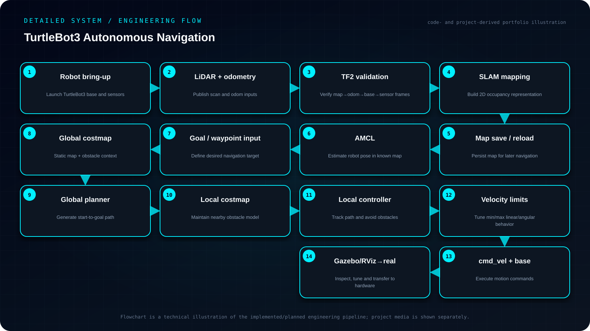

Objective
Implement and validate an end-to-end ROS2 autonomous-navigation workflow for TurtleBot3, covering bring-up, TF/odometry integrity, SLAM, AMCL localization, global/local planning, controller tuning, simulation and real-robot execution.
- Validate hardware/simulation bring-up, odometry and the TF2 frame tree before navigation.
- Generate, save and reuse maps through the SLAM workflow.
- Localize probabilistically with AMCL and route goals through Nav2 planning/control.
- Tune costmaps, planners and velocity limits in Gazebo/RViz before simulation-to-real execution.
My contribution
- Verified robot bring-up, odometry and the TF tree, created maps using SLAM, saved and reused maps for navigation, localized with AMCL and sent autonomous waypoint goals through Nav2.
- Planner experiments also compared RRT, BiRRT and PRM approaches in the broader project workflow.
System architecture
Sensors/odometry → TF tree → SLAM map or saved map → AMCL pose estimate → global planner → local controller/costmap → cmd_vel → TurtleBot3 base.

Read the architecture as text
- Robot bring-up — Launch TurtleBot3 base and sensors
- LiDAR + odometry — Publish scan and odom inputs
- TF2 validation — Verify map→odom→base→sensor frames
- SLAM mapping — Build 2D occupancy representation
- Map save / reload — Persist map for later navigation
- AMCL — Estimate robot pose in known map
- Goal / waypoint input — Define desired navigation target
- Global costmap — Static map + obstacle context
- Global planner — Generate start-to-goal path
- Local costmap — Maintain nearby obstacle model
- Local controller — Track path and avoid obstacles
- Velocity limits — Tune min/max linear/angular behavior
- cmd_vel + base — Execute motion commands
- Gazebo/RViz→real — Inspect, tune and transfer to hardware
Implementation
Verified robot bring-up, odometry and the TF tree, created maps using SLAM, saved and reused maps for navigation, localized with AMCL and sent autonomous waypoint goals through Nav2. Planner experiments also compared RRT, BiRRT and PRM approaches in the broader project workflow.
Engineering decisions
The project emphasized reproducible debugging: first confirm frame and odometry consistency, then localization, then planner/controller behavior, and only then tune hardware-specific motion limits.
Challenges & debugging
Navigation failures can originate from perception, transforms, localization, costmaps or motion control, so the system had to be validated layer by layer rather than only checking whether the robot eventually reached a goal.
Validation
Used Gazebo and RViz to inspect pose, map, paths, costmaps and sensor behavior before moving to the physical TurtleBot3. A real-world issue near the goal was traced partly to minimum velocity being too low for the loaded platform, and the threshold was increased to overcome static friction.
Outcome & boundaries
Completed a simulation-to-real navigation workflow and diagnosed a low-velocity near-goal issue on the loaded platform.
Project sources
Implementation notes and available project sources. Public code is linked where available; descriptive diagrams are not independent validation.
No public repository is linked for this project.


{kind=link}